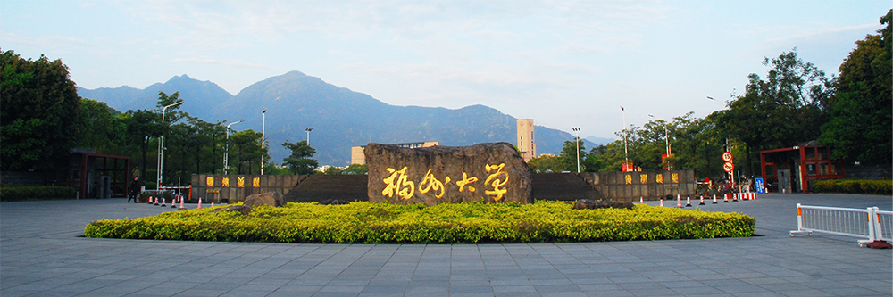
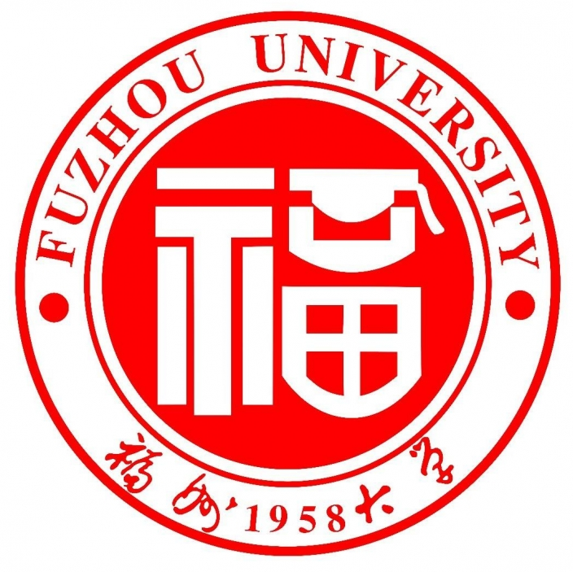
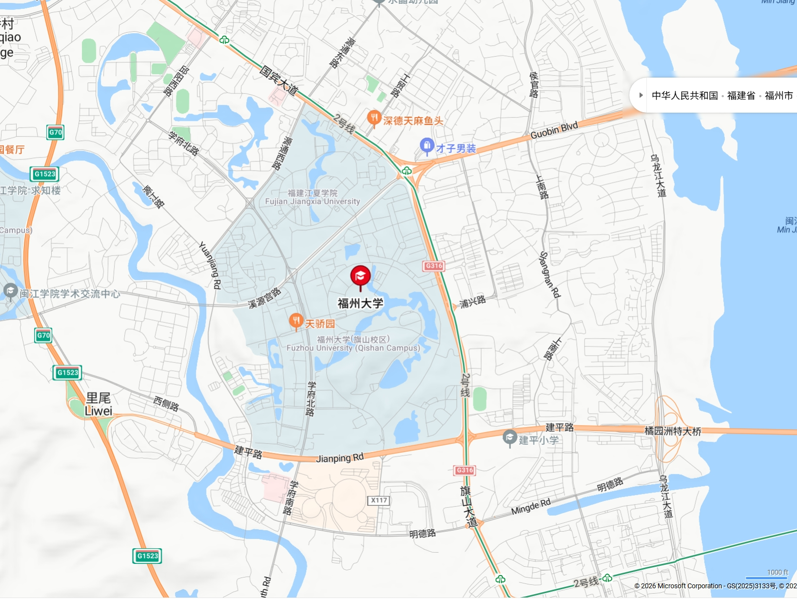

学校概况
福州大学简称“福大”，位于福建省福州市。学校创建于 1958 年， 是国家“双一流”建设高校、国家“211 工程”重点建设大学， 也是福建省人民政府与教育部共建高校。
Fuzhou University
这是一个以福州大学为主题的 HTML、CSS、JavaScript 学习作品。 由本人构思，并通过codex IDE调用GPT-5.5模型实现网页设计。


1958About FZU
学校设有7个校区，校舍建筑面积179.82万平方米，固定资产总值约81亿元，校训为“明德至诚，博学远志”。
现有在校生约5.9万人，教职工3500余人（含院士11人）。 设有27个学院（含1个独立学院和1个中外合作办学学院），和1家附属省立医院， 85个本科专业，一级学科博士点19个、5个博士专业学位授权类别、一级学科硕士点39个、25个硕士专业学位授权类别、12个博士后科研流动站。
学科实力强劲，化学学科再次入选“双一流”建设名单，化学、工程学、材料科学三个学科进入ESI全球排名前1‰, 共有13个学科进入ESI前1%。学校致力于建设具有若干世界一流学科的国际知名高水平大学，被誉为“福建省科学家的摇篮”。
福州大学简称“福大”，位于福建省福州市。学校创建于 1958 年， 是国家“双一流”建设高校、国家“211 工程”重点建设大学， 也是福建省人民政府与教育部共建高校。
学校长期坚持以工为主、理工结合的发展特色，现已形成理、工、 医、经、管、文、法、艺等多学科协调发展的办学格局。
福州大学重视本科生与研究生培养，建设有国家级人才培养基地、 国家级实验教学示范中心、国家一流本科专业建设点等教学平台。
校园配套有教学楼、图书馆、实验室、生活区等空间，整体环境开阔， 适合开展课堂学习、科研实践、社团活动和日常校园生活。
Campus View
旗山校区东门是福州大学的重要校园门户，校名石与远处山景相映成趣， 展现出开放、厚重而富有朝气的校园形象，也传递出福大扎根八闽、 面向未来的办学气质。
Location
旗山校区位于福州市大学城片区，周边交通道路、生活设施和高校资源较为集中。
